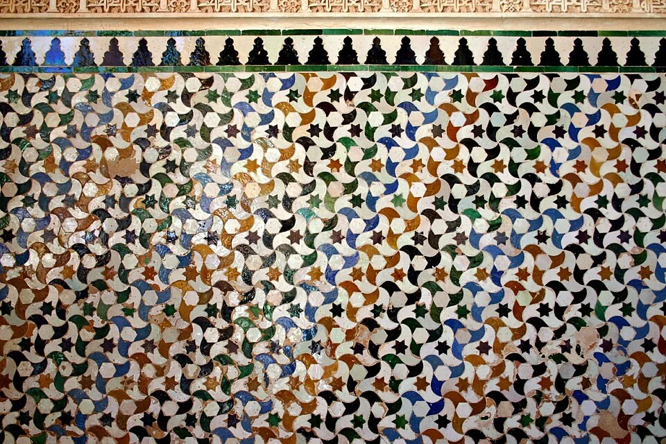
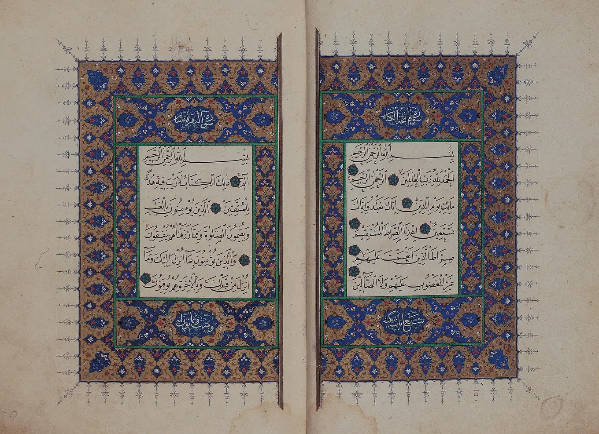
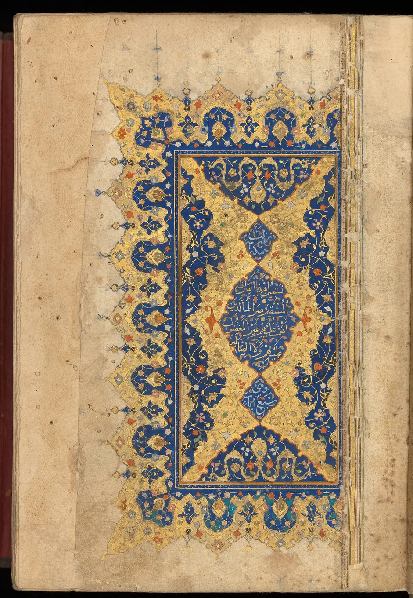
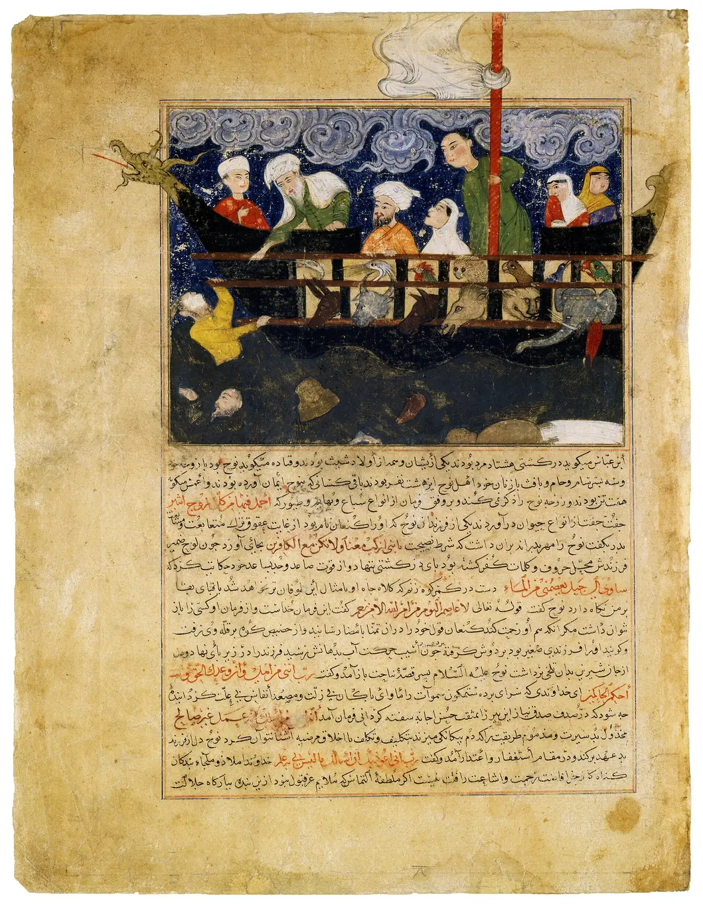
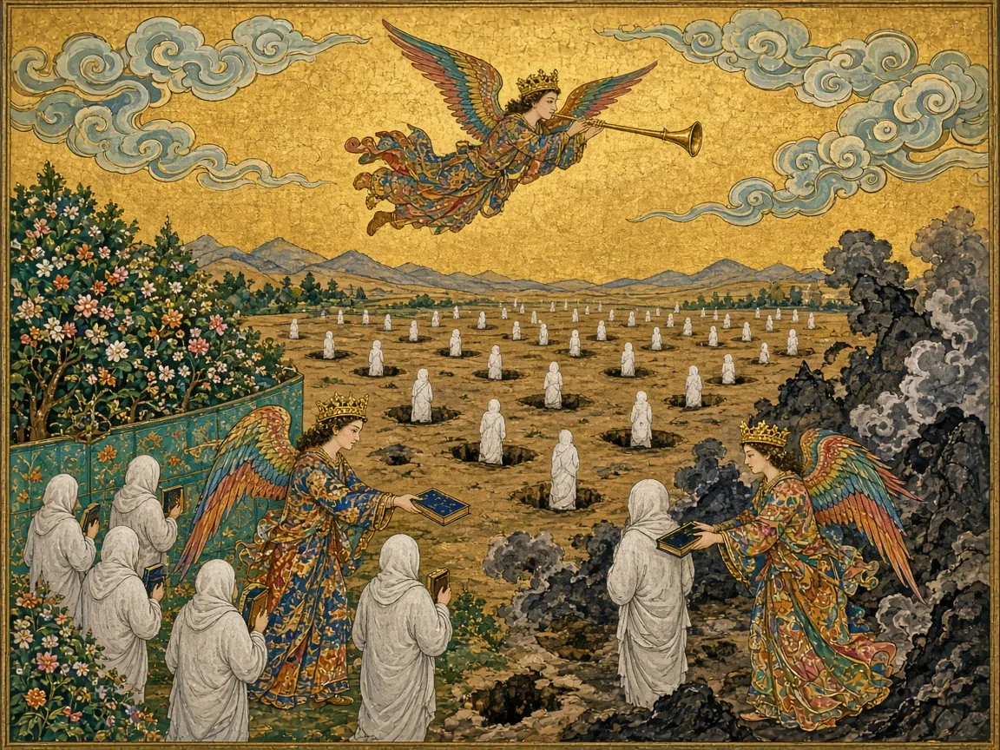

Orange County, California · p. 306
“My Main Objective Is to Make Islam Relevant”

- Imam Yassir Fazaga ties his Friday sermons to the American calendar
- Around Valentine’s Day: the Qur’an endorses romantic love within moral boundaries
- Born in East Africa, schooled in Orange County, trained in Virginia
- A challenge for North American Islam: imams who can speak to young Muslims about dating, marriage, and drugs
Review Question 11 · p. 306
Allah Means “God”
Not a private name
Allah is the common Arabic word for God. Arab Christians and Jews use it too.
Eternal and personal
“God is an eternal, spiritual being; God is not a force, but a divine person.”
Strictly one
Islam carries on true monotheism, which, the Qur’an says, Judaism and Christianity have mostly abandoned.
Muslims consider the teaching that there is only one God the basis and center of their religion.
Qur’an 112 · p. 306
“He Begot No One”
God is One, the eternal God. He begot no one, nor was He begotten.
Qur’an 112:1–3, quoted on p. 306
- Muhammad rejected the “daughters of Allah” of pre-Islamic Arabia as idolatry
- So Islam opposes the Christian doctrine of Jesus as the Son of God
- Later Muslim theology calls God’s absolute oneness tawhid
Review Question 11 · p. 306
Shirk: The Worst Sin
In Islam, idolatry (shirk), acknowledging other gods besides the one and only God, is considered the worst sin.
Consequence 1
No images or pictures of God.
Consequence 2
If Muhammad is depicted at all, his face is omitted.
Consequence 3
Anything that may encourage idolatry is forbidden too.
Art and idolatry · pp. 306–307
Beauty Without Images
- Strict Muslims object to representational art as a temptation to idolatry (a few schools of Muslim art ignored this)
- So mosques are decorated with colorful geometric patterns, said to reflect the order and beauty of creation, not of God
- Verses of the Qur’an in calligraphy decorate mosques and homes
- And the Prophet? If he is depicted at all, his face is omitted

Review Question 11 · p. 307
Ninety-Nine Names and “If God Wills”
“His are the beautiful names”
Ninety-nine in all, scattered through the Qur’an and compiled in later tradition: the Merciful, the Compassionate, the Creator, the Judge.
Beyond understanding
God is unique, infinite, creator and sustainer of all. God “can be described, but not known in any comprehensive way.”
All-powerful
All that happens, good or evil, happens within God’s plan and control.
Inshallah
“If God wills it”: said whenever Muslims speak of the future; probably the most common Arabic expression.
Chapter 12 Review Questions
Checkpoint: Review Question 11
Review Question 11 · Checkpoint
What are the main features of the Islamic teaching about God?
- Find the two anchor sentences on p. 306 (“God is an eternal…” and “In Islam, idolatry…”)
- Include: Allah as the generic word for God; strict oneness; Qur’an 112; shirk and no images
- Add God’s 99 names, God beyond understanding, and “if God wills” (p. 307)
- Review: Allah, Qur’an 112, Shirk, 99 Names
p. 307
Gabriel and the Angels

- God created angels and spirits to serve God and the human beings created later
- Muhammad received the Qur’an through the archangel Gabriel
- Islam recognizes three other archangels and a large company of ordinary angels
- As in Judaism and Christianity, angels carry divine revelation to humans
p. 307–308
The Jinn
- Spirits, good and evil; our word “genie” comes from jinn
- “Some of us are Muslims and some are wrongdoers” (Qur’an 72:14)
- Evil jinn are led by the devil, who rebelled when humans were created
- They are nonhuman spirits, not ghosts of the dead; many Muslims take them seriously today (Riyadh, 2012)
Review Question 5 · p. 308
The Recitation
- Muslims believe Gabriel revealed the Qur’an to Muhammad: “the perfect copy of an eternal, heavenly book”
- Qur’an means “recitation”: oral first, from Gabriel to Muhammad, then from Muhammad to his followers
- It exists only in Arabic, the language of its revelation
- Muslims treat even printed copies with great respect

Review Question 5 · p. 308
114 Surahs, Longest to Shortest
Structure
114 chapters called surahs, each divided into verses.
Size
About two-thirds the size of the New Testament and half the size of the Jewish Bible.
Order
Arranged by length, longer chapters first. The shorter, older ones teach one God and judgment; the longer, later ones give detailed instructions and refer to biblical history.
Content
Almost no historical narrative: nearly all teaching and commands.
Surah 1 · p. 308
al-Fatihah, “The Opening”

In the name of God, the Most Gracious, the Most Merciful. All praise and thanks be to God, the Lord of the Worlds, the Most Gracious, the Most Merciful, the only Lord of the Day of Judgment. You alone we worship, and You alone we ask for help. Guide us on the Straight Way, the Way of those on whom you have bestowed your grace, not of those who incur your anger or those who have gone astray.
Qur’an 1, quoted on p. 308
Review Question 5 · p. 308
Only in Arabic
“The Qur’an itself is said to exist only in Arabic, the language in which it was revealed by Muhammad to others.”
Translations distort
Muslims believe every translation involves some distortion of meaning, so no translation is the authentic Qur’an.
Facing pages
Where translations are used, many printed Qur’ans keep the Arabic on facing pages.
A change of mind
M. Brett Wilson shows how Muslims came to accept the long-rejected idea of translating the Qur’an.
p. 309
Memorize It All
- Muslim schoolchildren memorize large sections in Arabic, even if Arabic is not their language
- Imams are required to memorize all of it
- Recitation is an art form, with fame and sometimes riches for the talented
- Many Muslim nations televise recitation contests: think America’s Got Talent
Chapter 12 Review Questions
Checkpoint: Review Question 5
Review Question 5 · Checkpoint
What are the main features of the Qur’an?
- Find the two anchor sentences on p. 308 (“Muslims believe that the angel…” and “The Qur’an itself…”)
- Cover origin, name, language, structure (114 surahs, longest first), content, al-Fatihah, and memorization
- Bonus from Lecture 2: Uthman’s authoritative edition (p. 298)
- Review: Recitation, 114 Surahs, Only in Arabic
p. 309
The Prophets

- God revealed the divine will at key points in history through prophets; all call for submission and preparation for judgment
- Most of the 25 prophets named in the Qur’an are known from Judaism and Christianity: Adam, Noah, Abraham, Moses, Jesus
- Three are Arabian: Hud, Shu’aib, and Salih (7:66–93)
- Muhammad is the culmination and conclusion, the “seal” of the line
Review Question 6 · pp. 309–310
People of the Book
- Some prophets brought books: Zarathustra for Zoroastrians; Moses (the law) and David (the Psalms) for Jews; Jesus (the Gospels) for Christians
- People of the Book: Jews, Christians, and Zoroastrians, whose scriptures stand in a line with the Qur’an
- Not everyone with a sacred book: many religions have books
- Some passages suggest faithful People of the Book will enter heaven along with Muslims
Review Question 6 · p. 310
Protected, Taxed, Restricted
Protected
Not forced to choose between conversion and death; allowed to practice their religions among themselves.
Taxed and watched
An extra tax and greater government oversight (jizya, dhimmi).
Restricted
No seeking or even accepting converts from Islam; no new houses of worship, sometimes no repairs. Rebellion could mean annihilation.
Tolerated, but without what North Americans would call freedom of religion.

Chapter 12 Review Questions
Checkpoint: Review Question 6
Review Question 6 · Checkpoint
How did Muslim rulers traditionally treat the groups known as the “People of the Book”?
- Find the two anchor sentences on p. 310 (“After Muslim forces conquered…” and “They had to pay…”)
- Define the term first: which groups, and why them
- Then privileges, then restrictions, then long-term results
- Review: People of the Book and Protected, Taxed, Restricted
p. 310
The Last Day

- On a day known only to God, a trumpet sounds and the dead rise with eternal bodies
- Each receives a book of all their deeds: in the right hand for the righteous, the left for the wicked
- God judges by submission: claiming to be Muslim saves no one; obedient living does
- God is most gracious and merciful to sincere believers and forgives occasional sins
Check Yourself
Check Yourself: The Book
What does Allah mean, and what is shirk?
The common Arabic word for God; idolatry, acknowledging other gods besides God, the worst sin. Review
What do Muslims believe the Qur’an is?
Gabriel’s revelation to Muhammad, the perfect copy of an eternal, heavenly book, existing only in Arabic. Review
How is the Qur’an arranged?
114 surahs, from longest to shortest, after the opening prayer al-Fatihah. Review
Who are the jinn?
Nonhuman spirits, good and evil; some are Muslims (72:14). Review
Who are the People of the Book, and how were they treated?
Jews, Christians, Zoroastrians; spared forced conversion, taxed, overseen, restricted. Review
What happens on the Last Day?
The dead rise; each receives a book of deeds in the right or left hand; judgment by submission. Review
Required Study · pp. 307–308
Folk Islam and the Spirits
Official teaching
The Qur’an and Muslim teachers draw the believer’s focus to God alone.
Folk practice
Some Muslims practice Islam mainly to keep evil spirits away and win the blessing of good ones: amulets, charms, visits to holy men.
The response
Many teachers, as Sufis did in the past, work to focus faith on the God who controls good and evil spirits.
Every religion has a gap between official teaching and popular practice. Islam names it and works on it.
Required Study · pp. 302, 309
The Mahdi: One More Figure to Come
Who
Mahdi, “the one guided” by God. For Twelver Shi‘as, the hidden twelfth imam.
When
Shortly before the end of time and the final judgment.
What
To rid the world of injustice in preparation for the end.
Today
In the early 2000s the main Shi‘a militia in Iraq was called the Mahdi Army, without claiming its leader was the Mahdi.
Required Study · p. 298
How the Qur’an Was Compiled
- Muhammad did not write the revelations down; followers recorded them on parchment, palm leaves, and wood, and memorized them
- Caliph Uthman (644–656) gathered them, kept the authentic, destroyed the rest
- Tradition adds an earlier collection under Abu Bakr after many reciters died in battle
- The oldest manuscripts, such as this one, match the standard text closely

Required Study · p. 308
Translating the Untranslatable
The principle
Only the Arabic is the Qur’an; every translation distorts some meaning.
The long refusal
For centuries many scholars opposed translating it at all, especially for use in prayer.
The change
In the 1900s, nationalism, printing, and mission pushed Muslims to accept translations (M. Brett Wilson).
The compromise
“Interpretations of the meaning,” printed with the Arabic on facing pages.
Required Study · p. 310
Saved Along with Muslims?
Some passages in the Qur’an even suggest that People of the Book who follow their religions carefully will enter heaven along with Muslims.
p. 310
Inclusive passages
Qur’an 2:62 and 5:69 promise reward to Jews, Christians, and Sabians who believe in God and the Last Day and do good.
Exclusive passages
Qur’an 3:85: whoever seeks a religion other than islam will not have it accepted.
Lamptey’s answer
A Muslim woman theologian reads the Qur’an as affirming real religious difference within God’s plan.
Required Study · p. 310
Heaven, Hell, and Martyrdom
- Heaven: gardens, cool waters, plentiful food, wine that does not intoxicate, and the houris (Qur’an 56:1–56)
- Hell: physical and spiritual pain, darkness, fire, and boiling filth
- Muslims differ on how literally to read these; all observant Muslims believe heaven and hell are real
- Those who die struggling for Islam go to heaven; a few radical groups misuse this to recruit suicide attackers
Required Study · Qur’an passages quoted in the chapter
Reading Room: Five Short Passages
| Passage | Text (as quoted in the chapter) | Ask |
|---|---|---|
| 96 (p. 294) | “Recite!” | Why is the first word a command to speak? |
| 112:1–3 (p. 306) | “God is One, the eternal God. He begot no one, nor was He begotten.” | Which two beliefs does it reject? |
| 72:14 (p. 307) | “Some of us are Muslims and some are wrongdoers.” | Who is speaking, and what does that imply? |
| 1 (p. 308) | “Guide us on the Straight Way…” | Why is this prayer a summary of Islam? |
| 2:256 (p. 314) | “There must be no compulsion in religion.” | How does it fit the treatment of People of the Book? |